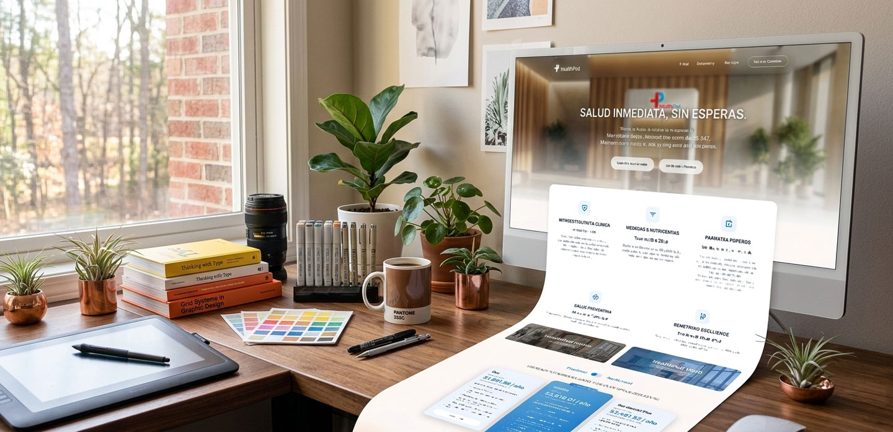
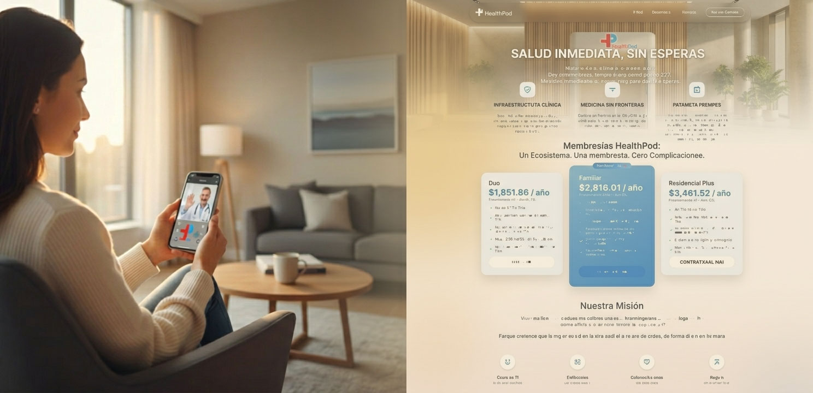
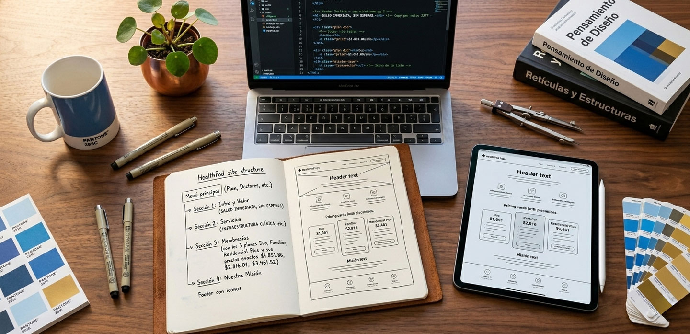
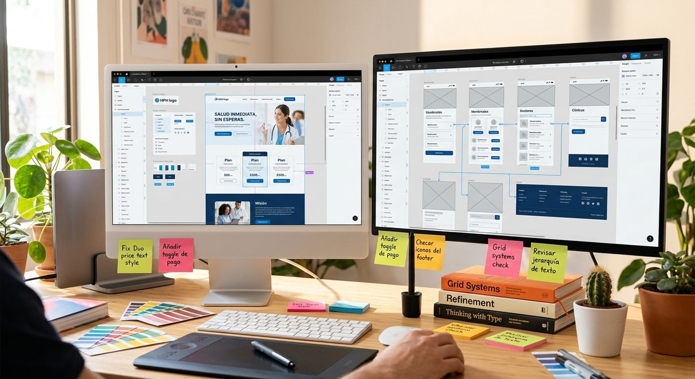
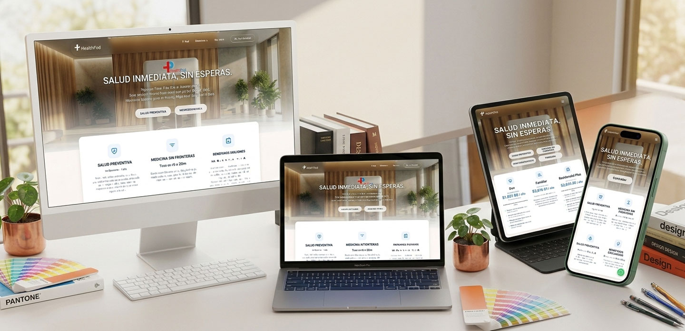

HealthPod Website — Narrativa estratégica para un ecosistema de salud digital
El sitio web de HealthPod fue diseñado para transformar un ecosistema tecnológico complejo en un mensaje claro, institucional y comercialmente estratégico.
HealthPod es un ecosistema tecnológico de atención médica mediante pods físicos respaldados por una plataforma digital.
Más que una presencia online, el objetivo fue construir una herramienta capaz de comunicar valor, generar confianza y respaldar procesos de venta ante residenciales, corporativos e inversionistas.
Web Designer / UI-UX / Developer
Arquitectura + Comunicación Estratégica
2025

Contexto
HealthPod integra tecnología médica, infraestructura física y gestión digital en un solo ecosistema.
Sin embargo, explicar el modelo a residenciales, corporativos e inversionistas requería claridad estructural.
El sitio debía responder con claridad qué es HealthPod, cómo funciona y por qué representa una inversión estratégica viable dentro del sector salud corporativo y residencial.
Se convirtió en pieza clave para fortalecer el posicionamiento institucional del producto.

El reto
Traducir un sistema tecnológico complejo en una experiencia digital comprensible para múltiples públicos:
- ✔ Directivos residenciales
- ✔ Corporativos
- ✔ Usuarios finales
- ✔ Inversionistas
El equilibrio debía mantenerse entre comunicación institucional sólida, claridad operativa y orientación comercial, evitando tecnicismos innecesarios.
Estrategia
El sitio fue estructurado bajo una narrativa progresiva:
- 1.- Problema actual en salud corporativa y residencial
- 2.- Presentación clara de la solución
- 3.- Explicación visual del funcionamiento
- 4.- Beneficios segmentados
- 5.- Llamados estratégicos a la acción
Se priorizó jerarquía visual clara, bloques visualmente amplios de lectura, uso estratégico de color, modularidad estructural y coherencia con el producto digital.

Mi rol
Participé de manera integral en:
- ✔ Definición de arquitectura de información
- ✔ Estructuración narrativa del sitio
- ✔ Prototipado completo en Figma
- ✔ Presentaciones y validación con stakeholders
- ✔ Iteraciones basadas en feedback comercial
- ✔ Desarrollo en código puro
- ✔ Entrega mediante repositorios en GitHub
El proceso incluyó ajustes derivados de nuevas peticiones estratégicas del cliente, fortaleciendo la alineación entre diseño y negocio.

Sistema visual
El diseño mantuvo coherencia con el producto digital:
- Jerarquías tipográficas claras
- Paleta alineada a salud y tecnología
- Separación visual por niveles de información
- Componentes modulares reutilizables
- Diseño responsivo optimizado
La intención fue generar confianza desde la estructura visual, no solo desde el contenido.

Resultado
El sitio logró:
- ✔ Comunicación clara de la propuesta de valor
- ✔ Fortalecimiento del posicionamiento institucional
- ✔ Herramienta comercial estratégica
- ✔ Narrativa digital estructurada y coherente
- ✔ Activo clave en presentaciones comerciales
Más que un sitio informativo, se transformó en un instrumento de negocio.
El sitio se encuentra actualmente público en: healthpod.mx
Conclusión
HealthPod Website fue un ejercicio de diseño estratégico enfocado en comunicación y posicionamiento.
El proyecto reforzó la importancia de una arquitectura clara, jerarquía visual aplicada a negocio, la traducción de complejidad tecnológica en claridad comunicativa y alineación constante entre diseño y objetivos comerciales.
No fue únicamente diseño web, fue construcción de narrativa digital con enfoque estratégico.